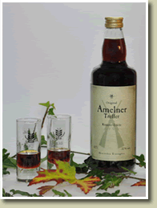

Kräuterlikör · kräftig
Amelner Treffer
Ein erlesener Kräuterlikör nach altem Hausrezept. Ausgesuchte Kräuter verleihen ihm seine unverwechselbare geschmackliche Note. Dank seiner Bekömmlichkeit der perfekte Begleiter nach dem Essen.
13,50 € / Flasche
Bestellen